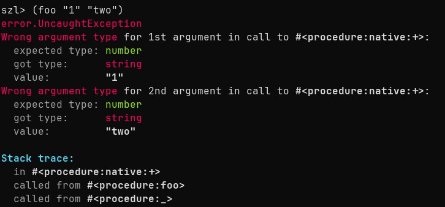
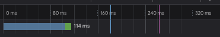
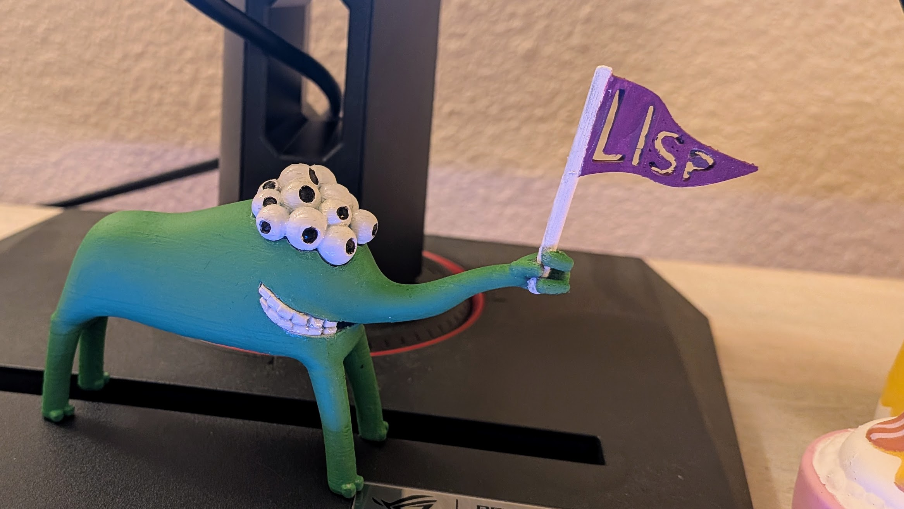

2025 Recap
Table of Contents
1. Scheme Interpreter
I actually started writing an interpreter in Zig (and Rust) in 2024. In 2025, I did a few more attempts and got a little farther.
I implemented a lot of the Scheme R7RS in Zig as opposed to some custom spec. This was great because I got to focus a lot on the implementation and not the design. Designing a language involves so many unimportant decisions. I also learned some stuff that is specific to Scheme. The most difficult bits to internalize and implement were continuations and dynamically scoped variables. The most difficult thing that I have left is the controversial dynamic unwind.
Overall, I'm pretty happy with the progress. Implementing the Scheme spec was insightful, though I don't see myself finishing the implementation. However, I might reboot the effort and start a new interpreter.

Figure 1: It even has error messages
2. Self-Hosted Git + JJ
2.1. ForgeJo
For my meaningless personal projects, I use my self-hosted ForgeJo instance. ForgeJo is very fast, light, and works pretty well. I'm a sucker for responsiveness, so I love that pages and git operations happen instantly. On the downside, I really notice the latency when using other source control systems.

Figure 2: So fast
2.2. JJ
I also switched from Mercurial and Git to purely jj. I didn't have gripes with Mercurial or Git, but I appreciate being able to use just jj. jj is sort of a frontend to Git and also Google's Internal Source Control.
Bonus:
- It's really fast with Google's source control compared to the Mercurial wrapper.
- The model is an upgrade over Git and Mercurial.
One important lesson from jj is that parasitic systems win. Even if a version control system is better, it will have a hard time displacing Git. jj is partially successful because it builds on top of Git. Other examples I can think of:
- Kotlin/Clojure/Scala on JVM ecosystem.
- Typescript on JavaScript.
3. 3D Printer
I got a 3D printer, the Prusa Mini+! Very cool, I can see why they were so hyped up over 10 years ago. I've printed and painted some cool figures. Hopefully this year I can learn Blender and CAD to make better use of it.

Figure 3: 3D Printed Lisp Alien
4. New Job
🎵New Job🎶New Job🎵
I started a new job on the Google Fonts team in November. After 9 years of being on Big Data processing, it felt strange to move to something complete different. However, after 2 months, I no longer feel like being a "data person" is in my bones.
The new job is great, though my performance has been mixed. Some days I feel confident and capable, other days I feel like a beginner again. But I'm making steady progress and expect things to smooth out soon.